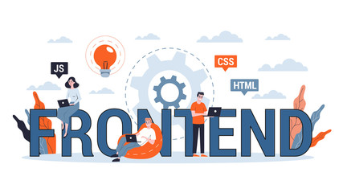

What Web Development is?
Have you ever wondered that what websites are, how they work and how they are created?
Web development is the process of creating and maintaining websites and web applications, essentially bringing ideas to life online by using programming languages like HTML, CSS, and JavaScript to design the look, structure, and functionality of a website, ranging from simple static pages to complex interactive applications, all accessible through a web browser; it typically involves both a front-end (user-facing design) and back-end (server-side logic) component, allowing users to interact with the website seamlessly.
Front-end Development
Front-end development is the part of web development focused on the user-facing elements of a website or web application, essentially creating the visual design and interactive features that users see and interact with directly, primarily using languages like HTML, CSS, and JavaScript.
Back-end Development

Back-end development is the process of building the server-side software for a website or mobile app. It involves writing code that controls how the website's front-end appears and functions. Back-end developers are responsible for creating and maintaining the technology that powers the website, including the server, database, and application logic.